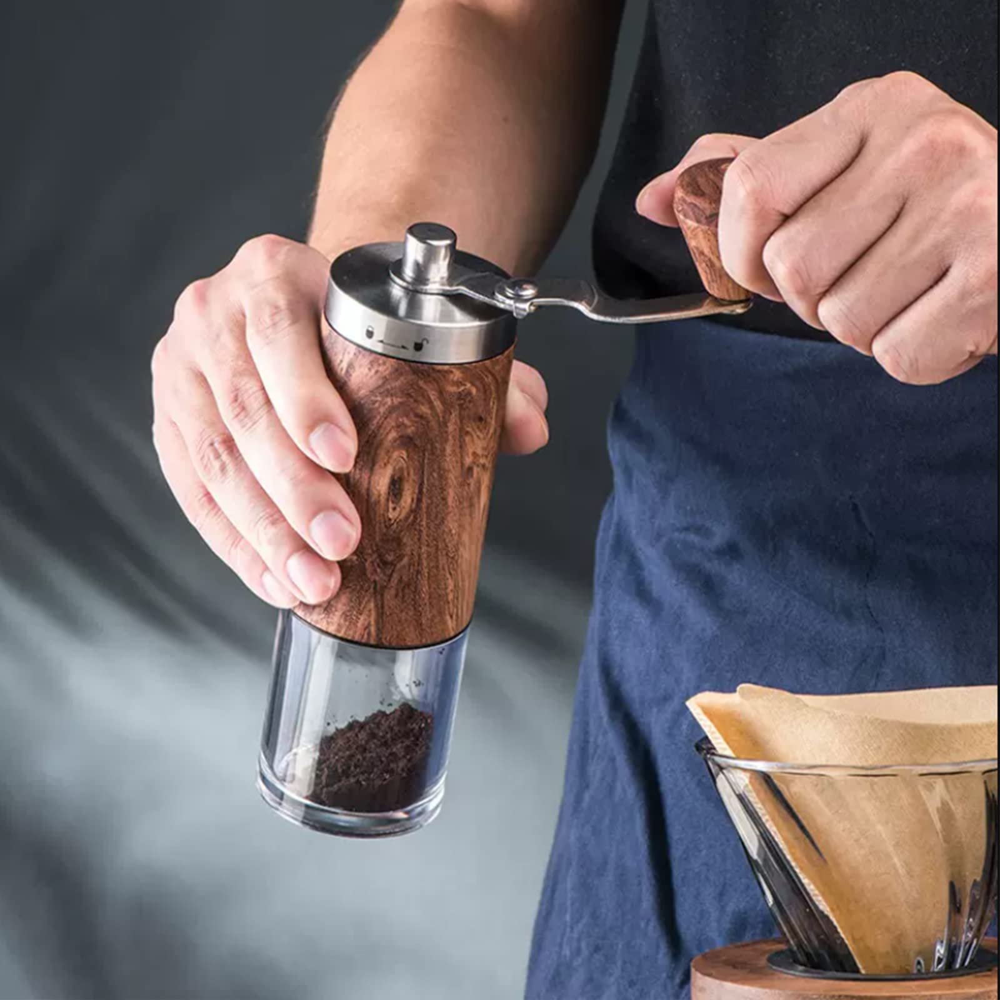
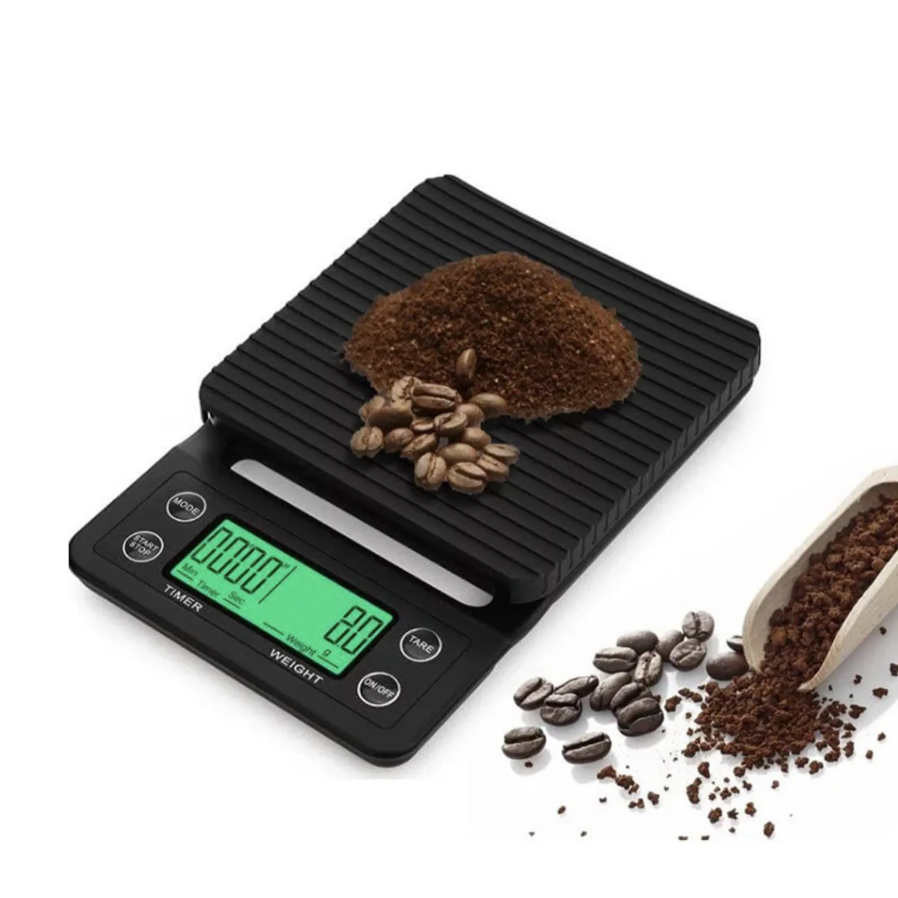

Para disfrutar de un café de especialidad en la comodidad de tu hogar, no necesitas una cafetería entera. Con unos pocos elementos clave, puedes elevar drásticamente la calidad de tu taza diaria y experimentar con diferentes métodos de preparación.
Los 5 Elementos Imprescindibles
Aquí te presentamos los equipos que todo amante del café debería considerar tener en su cocina:
1. Molino de Muelas de Calidad
Este es, sin duda, el elemento más importante. Un molido uniforme es crucial para una extracción consistente y un sabor óptimo. Los molinos de muelas (burr grinders) son superiores a los de cuchillas, ya que muelen el café en partículas de tamaño consistente. Puedes optar por un molino manual para una opción más económica o uno eléctrico para mayor comodidad.
2. Balanza Digital con Temporizador
La precisión es clave en la preparación del café. Una balanza te permite medir con exactitud la cantidad de café y agua, dosificando con la proporción ideal para cada método. El temporizador incorporado te ayudará a controlar el tiempo de extracción, un factor vital para evitar la sobre o sub-extracción.
3. Hervidor con Cuello de Cisne (Gooseneck Kettle)
Especialmente para métodos de vertido como V60 o Chemex, un hervidor con cuello de cisne te da un control superior sobre el flujo y la dirección del agua. Esto permite una saturación uniforme del café molido, lo que se traduce en una extracción más equilibrada.
4. Tu Método de Preparación Preferido
Aquí es donde entra tu gusto personal. Algunas opciones populares para el hogar incluyen:
- Prensa Francesa: Fácil de usar, produce un café con cuerpo completo.
- Aeropress: Versátil, ideal para viajes, produce un café limpio y concentrado.
- Pour Over (V60, Chemex): Requiere más técnica, pero permite resaltar las notas de sabor más delicadas.
- Moka Pot: Para un café fuerte y con cuerpo, similar a un espresso casero.
5. Granos de Café de Especialidad Frescos
El mejor equipo del mundo no puede compensar granos de mala calidad o viejos. Invierte en café de especialidad recién tostado y de origen único. Busca la fecha de tueste en el empaque y compra en pequeñas cantidades para asegurar la frescura.
Consejos de Nuestros Baristas
"No necesitas gastar una fortuna para hacer un buen café en casa. Empieza con lo básico, domina una técnica y luego ve añadiendo equipos a medida que tu pasión por el café crezca. La clave es la paciencia y la experimentación."
- Sofía Rivas, Especialista en Café Casero
Errores Comunes al Comprar Equipo
| Error | Problema Causado | Recomendación |
|---|---|---|
| Ignorar el molino | Molido inconsistente, sabor pobre | Priorizar un buen molino de muelas |
| Comprar demasiado equipo | Confusión, gasto innecesario | Comenzar con un método y equipo básico |
| No limpiar el equipo | Acumulación de aceites, sabores rancios | Limpiar regularmente todos los equipos |
| Granos de café de baja calidad | No importa el equipo, el café será malo | Invertir en granos de especialidad frescos |
Próximos Talleres de Equipos y Mantenimiento
¿Quieres aprender a sacar el máximo partido a tu equipo? Únete a nuestros talleres:
- Mantenimiento de tu Equipo de Café: Primer lunes de cada mes - 19:00 a 20:30
- Guía para Comprar tu Primera Cafetera: Último viernes de cada mes - 17:00 a 18:30
Contáctanos para más información e inscripciones.

Sobre el Autor
David Gómez es el experto en equipos de Beercoffé, con una vasta experiencia en la selección y el mantenimiento de todo lo relacionado con la preparación del café, desde molinos hasta máquinas de espresso. Es un defensor de la inversión inteligente en herramientas que realmente marcan la diferencia en la taza de café casera.
Comentarios (0)
Sé el primero en dejar un comentario.